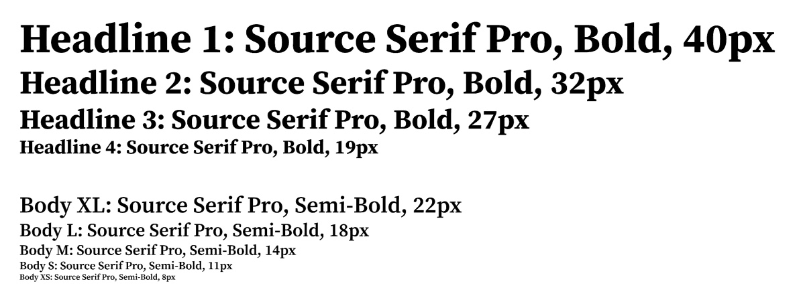

We use Source Serif Pro for headlines to add elegance and draw attention while Roboto is used for body text and UI elements for clean, easy readability.
Now known as Source Serif, is a transitional serif typeface designed by Frank Grießhammer for Adobe as a companion to the Source Sans Pro family. The typeface features simplified, highly readable letter shapes, making it suitable for extended text on both paper and screen. It supports a wide range of languages, including Latin, Cyrillic, and Greek, with ongoing updates to extend glyph set coverage. With a clean style, high readability, and wide range of language support, this font fits perfectly for our Bloom Guide app.
Roboto is a sans-serif typeface family designed by Google for its Android operating system, known for its geometric structure, open curves, and excellent readability across various devices and sizes, making it a popular choice for digital products and mobile apps, The font's tall x-height and clear letterforms ensure excellent readability, especially on screens.